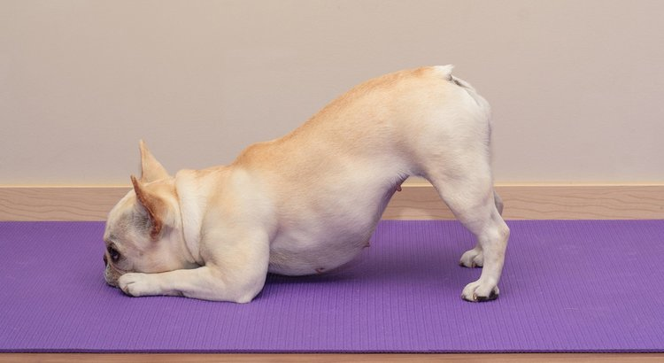

Downward Dog...Literally! Because pets love yoga too.
Downward Dog...Literally! Because pets love yoga too.
WHY DO YOGA?
Yoga improves strength, balance and flexibility
Yoga helps with back pain relief
Yoga can ease arthritis symptoms
Yoga benefits heart health
Yoga relaxes you, to help you sleep better
Yoga can mean more energy and brighter moods
Yoga helps you manage stress
Yoga connects you with a supportive community... and so much MORE